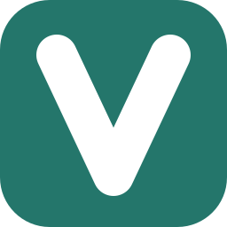

桌面，沉下心来写。
单窗口 Markdown 工作区 · 八种布局 / 13 套排版 / 章节编排

维刻 Vex设计原型写下想法，看见脉络。
从一闪而过的想法，到一篇有脉络的文章。
在不同的桌面系统上，找到同样自在的写作节奏。
单窗口 Markdown 工作区 · 八种布局 / 13 套排版 / 章节编排
深色桌面工作区 · 即时编辑与导图
EXE · x64 · 目录选项
进度、升级、修复与卸载
DMG · x64 / arm64 · 拖放与复制
已有应用替换与推出映像
DEB · x64 / arm64 · 系统授权
安装、打开与移除